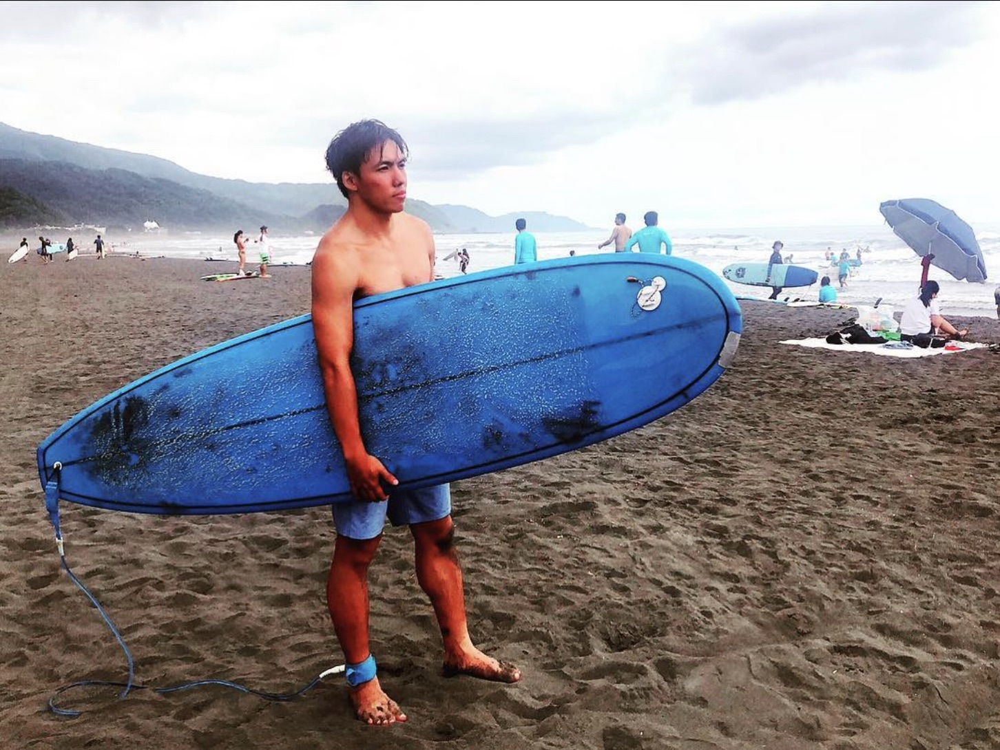
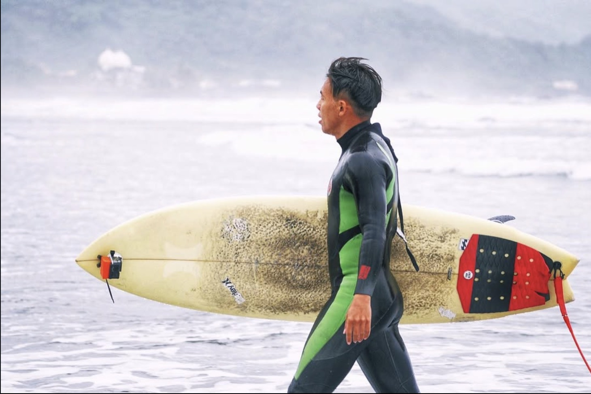

新手衝浪板怎麼選？軟板、長板、短板一次搞懂
新手挑第一塊板子，最常犯的錯是照著衝浪影片裡的帥氣短板去選。但對剛開始學的人來說，該問的不是「哪塊板子比較帥」，而是「哪塊板子最容易讓我站起來」——答案幾乎都一樣：夠長、夠厚、夠浮。
先搞懂三種板型
衝浪板大致可以分成三類，差別主要在長度跟浮力：
- 軟板（Soft-top）：表面是軟泡棉，撞到人或撞到自己都比較不痛，7～9 呎最常見。幾乎所有衝浪教室的體驗課都用這種
- 長板（Longboard）：9 呎以上，浮力大、划水快、小浪也追得到，適合台灣夏天常見的小浪，玩法偏優雅的走板
- 短板（Shortboard）：大約 5 呎半到 6 呎半，轉向靈活，但浮力小、划水慢，沒有一定基礎很難追到浪
中間還有一種叫「快樂板（Funboard）」或「Mini Mal」，大約 7～8 呎，算是長板跟短板之間的過渡款，很多人第一塊自己買的板子就是它。
「小藍」是我的第一塊板——一張 7 呎的藍色 Funboard，陪我衝了兩年才換成短板。但中間的撞牆期長達一年，春夏秋幾乎天天下水，才真正跟它磨合起來。
新手選板，先看長度跟寬度
挑板子的時候，最直接要看的就是板長跟板寬。板子越長、越寬，浮力就越大，帶來兩個新手最需要的好處：
- 站上去比較穩：板面寬、浮力夠，起乘站立的瞬間板子不容易左右翻
- 趴著划水不會晃：趴在板子上比較平穩，力氣可以集中在划水追浪，不用一直分心找平衡
反過來說，板子太短太窄，趴上去板子就往下沉、左右晃，划水划得很累卻一直追不到浪，站起來的瞬間又晃得厲害——很多人以為是自己運動神經不好，其實是板子挑錯了。
有些板子底部或板尾會標「容積（Volume）」，單位是公升（L），也是在看浮力大小，可以當作輔助參考；但新手剛開始挑，先抓「夠長、夠寬」這兩個原則就很夠用了。
租板還是買板？
前幾次下水，建議先用租的。原因很簡單：你現在還不知道自己會不會繼續玩、習慣去哪個浪點、喜歡長板還是短板。可以考慮自己買板的時機大概是：
- 已經可以自己划出去、穩定站起來，不用教練推
- 一個月會下水好幾次，租板費開始累積成一筆不小的開銷
- 租過幾種不同尺寸，知道自己適合的長度和容積落在哪
第一塊板子很推薦買二手，新手難免會撞到、刮到，二手板摔起來比較不心疼。買之前請店家或有經驗的浪友幫忙看一下板身有沒有裂縫、進水。
尺寸的部分，我自己是從 7 呎的 Funboard 起步，但回頭看，新手還是建議先從 8～9 呎以上的長板開始——浮力更大、更好站，撞牆期也能縮短不少。等站穩了、知道自己想走優雅的長板路線還是轉向靈活的短板路線，再依照自己的衝浪風格和目標，挑下一塊板子。

新手選板 checklist
- 第一塊板選軟板或 8 呎以上的長板，先別碰短板
- 挑夠長、夠寬的板子，寧可太浮也不要太沉
- 前幾次先租板，試過不同尺寸再決定要不要買
- 腳繩長度大約跟板子一樣長，下水前確認有綁好
板子選對了，學衝浪會順很多，但再好的板子也救不了不適合的海況。出發前加 LINE 好友、打浪點名稱查一次即時浪況，看看今天的浪適不適合新手，再決定要不要出門打浪。